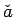
and
The vector equation above is a system of two equations and two unknowns:
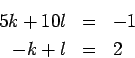
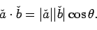
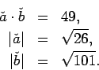
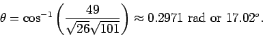
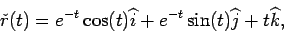
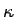
when t=0. What is the radius of curvature at this point?
One acquires the solution here by computing the following quantities:
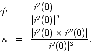
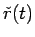
correctly. To calculate the quantities above, we must differentiate twice.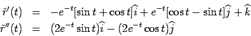
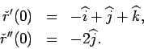
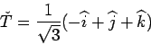
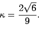
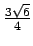
.
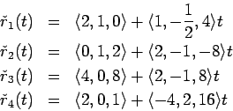
Many students correctly determined that
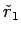
and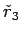
are parallel. However, two parallel lines are not necessarily the same line, right? In fact, a little more checking would reveal that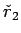
and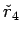
are also parallel. Which pair represents the same line? You must check and see if a point on is also on , or similarly, if a point on is on . For instance,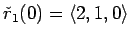
. Is there a t0 such that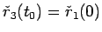
? The answer is yes! You can solve for t0 and see that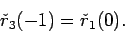
We worked a problem just like this in class, and another one was
assigned as a homework problem. The most common problem came when students
tried to memorize a formula for solving this problem and put the wrong
numbers into the formula. Memorizing formulas for Calc III is a major
mistake. The best way to succeed is the learn the material so that you
understand how to arrive at the formulas.
Essentially, you must set up a four by four
linear system
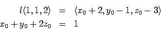
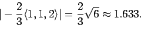
If we were to label the points above as A, B, and C, we would want to find
half the area of the parallelogram formed by vectors AB and AC. If we call
these vectors
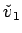
and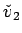
, respectively, we have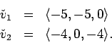
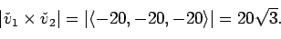
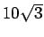
or approximately 17.32.
This problem is straightforward. To find the equation, you must find a
point in the plane and a normal vector. You are given three points in the
plane, so really, you only need to find a normal. The three points in the
plane specify two vectors, so you just need to find a vector perpendicular
to both of these vectors. The cross product of two vectors will always
yield a mutually perpendicular vector, so the cross product of two
non-collinear vectors in a plane will always yield a normal vector.
From the points given above, one can see that the vectors
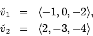
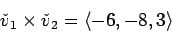